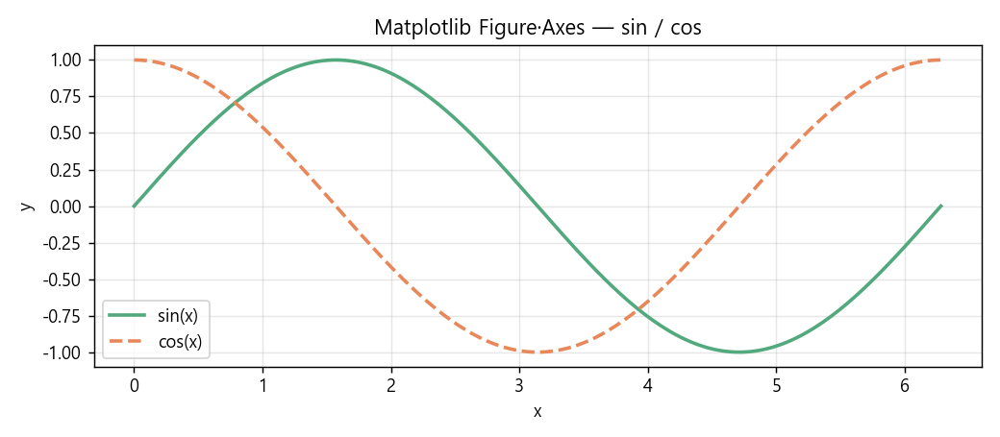
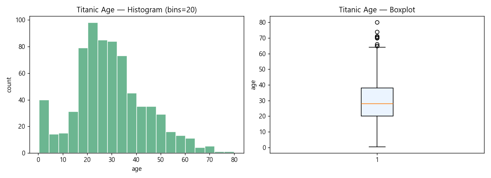
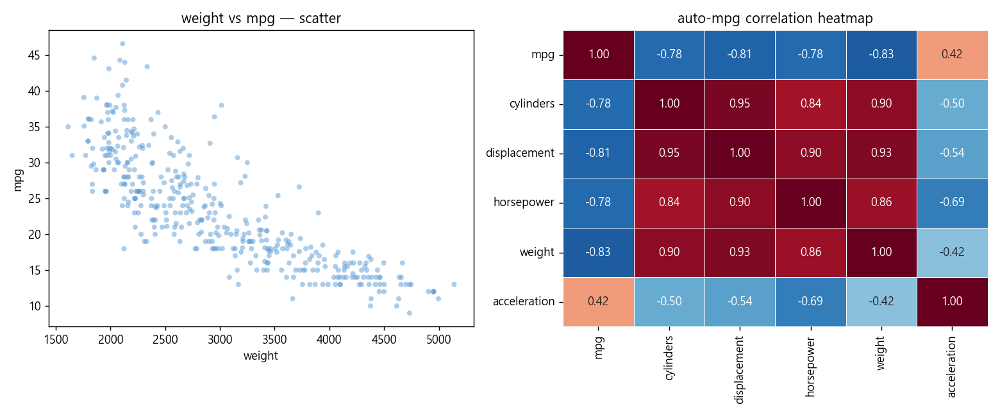
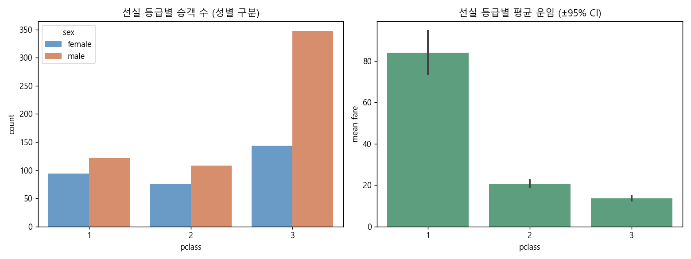
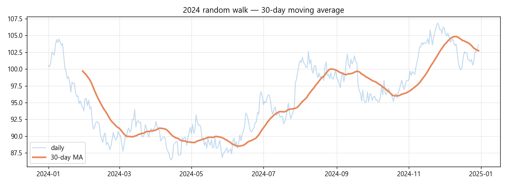
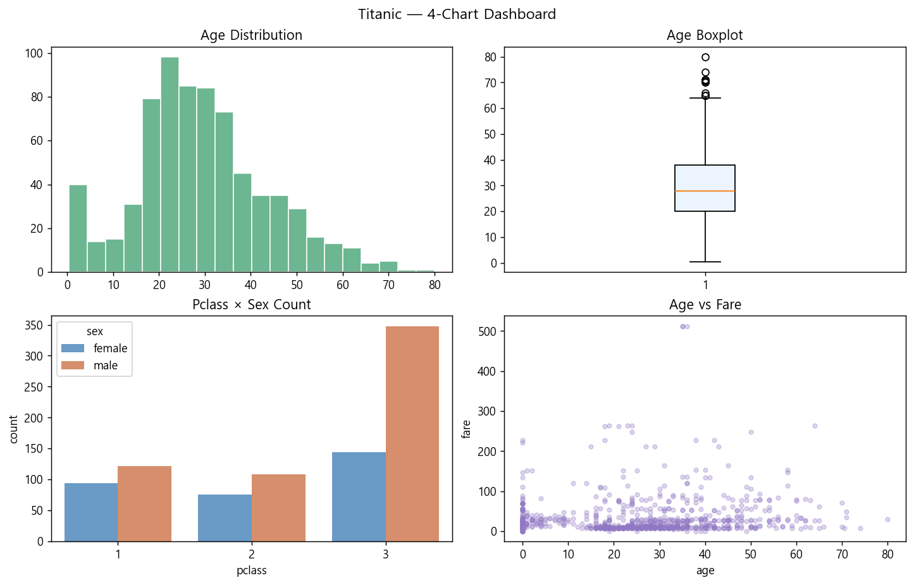

CH 01Figure · Axes 기초 구조#
학습
Matplotlib의 계층 구조:
- Figure : 전체 캔버스. 여러 Axes(서브플롯)를 포함.
- Axes : 실제 그래프가 그려지는 영역. x·y 축, 제목, 범례 등 포함.
- Artist : Figure·Axes를 포함한 모든 그리기 요소.
# path : test_numpy/numpy_test5.py (발췌)
# 2026-05-26
import numpy as np
import matplotlib
matplotlib.use('Agg') # 창 없이 파일로 저장
import matplotlib.pyplot as plt
x = np.linspace(0, 2 * np.pi, 200)
fig, ax = plt.subplots(figsize=(8, 4)) # Figure + Axes
ax.plot(x, np.sin(x), label='sin(x)')
ax.plot(x, np.cos(x), label='cos(x)', linestyle='--')
ax.set_xlabel('x')
ax.set_ylabel('y')
ax.set_title('sin·cos — OOP 방식')
ax.legend()
ax.grid(True, alpha=0.3)
plt.tight_layout()
plt.savefig('sin_cos.png', dpi=150)
plt.close(fig)
"The Figure is the top-level container for all the plot elements.
When you call plt.subplots(), it returns a Figure
and one or more Axes objects."
— Matplotlib 공식 문서 · Pyplot tutorial
의문 → 가설
→ Figure는 종이, Axes는 그 종이 위의 개별 그래프 영역이다. 한 Figure에 여러 Axes(subplot)를 배치할 수 있기 때문에 분리한다.
plt.subplots(2, 3)이면 Figure 하나에 Axes 6개가 생성된다.
테스트
fig, ax = plt.subplots() print(type(fig)) # matplotlib.figure.Figure print(type(ax)) # matplotlib.axes._axes.Axes print(fig.axes) # [<Axes: >] → 1개 fig2, axes = plt.subplots(2, 3) print(type(axes)) # numpy.ndarray print(axes.shape) # (2, 3) → subplots(2,3)은 Axes 6개를 2×3 ndarray로 반환

결론(중간)
plt.subplots(nrows, ncols)는 Axes를 ndarray로 반환하므로
axes[i, j]로 개별 접근한다.
CH 02pyplot vs OOP 인터페이스 비교#
학습
Matplotlib 두 인터페이스 비교:
| 항목 | pyplot (plt.xxx) | OOP (ax.xxx) |
|---|---|---|
| 개념 | 전역 state 기반 | 명시적 객체 기반 |
| 간결성 | 높음 (3줄) | 중간 |
| 제어 수준 | 낮음 | 높음 (다중 Axes) |
| 권장 상황 | 빠른 탐색용 | 서브플롯·출판용 |
# pyplot 방식
import matplotlib.pyplot as plt, numpy as np
x = np.linspace(0, 6.28, 100)
plt.plot(x, np.sin(x))
plt.title('pyplot 방식')
plt.show()
# OOP 방식 — 동일 결과
fig, ax = plt.subplots()
ax.plot(x, np.sin(x))
ax.set_title('OOP 방식')
plt.show()"For simple plots, the pyplot API is fine. For complex figures with multiple subplots, explicit use of Figure and Axes objects gives you full control." — Matplotlib 공식 문서 · API interfaces
의문 → 가설
→ pyplot은 전역 상태(현재 활성 Axes)를 추적한다.
plt.subplot(1,2,1)로 전환하지 않으면 이전 Axes에 계속 그려져
어느 Axes에 그리고 있는지 추적이 어렵다.
OOP는 ax 변수를 명시하므로 이런 혼동이 없다.
테스트
--- pyplot 방식 (2개 subplot) --- fig = plt.figure() plt.subplot(1,2,1) # 첫 번째 활성화 plt.plot([1,2,3]) # 첫 번째에 그림 plt.subplot(1,2,2) # 두 번째 활성화 plt.plot([3,2,1]) # 두 번째에 그림 --- OOP 방식 (동일 결과) --- fig, (ax1, ax2) = plt.subplots(1, 2) ax1.plot([1,2,3]) # ax1 명시 ax2.plot([3,2,1]) # ax2 명시 → OOP에서 ax를 잘못 쓰면 즉시 NameError로 발견 가능 pyplot은 활성 Axes가 어디인지 묵시적 → 실수 빈발
결론(중간)
CH 03분포 시각화 : histogram · boxplot#
학습
histogram : 값의 빈도 분포를 막대로 표현. bins 수가 핵심 파라미터. boxplot : Q1·중앙값·Q3·수염(IQR×1.5)·이상값 점을 한 번에 표현.
# 2026-05-26 — titanic age 분포 비교
import seaborn as sns
import matplotlib
matplotlib.use('Agg')
import matplotlib.pyplot as plt
titanic = sns.load_dataset('titanic')
age = titanic['age'].dropna()
fig, (ax1, ax2) = plt.subplots(1, 2, figsize=(10, 4))
# Histogram
ax1.hist(age, bins=20, edgecolor='black', color='#52A97E', alpha=0.8)
ax1.set_title('Titanic Age — Histogram (bins=20)')
ax1.set_xlabel('Age'); ax1.set_ylabel('Count')
# Boxplot
ax2.boxplot(age, vert=True, patch_artist=True,
boxprops=dict(facecolor='#EBF4FF'))
ax2.set_title('Titanic Age — Boxplot')
plt.tight_layout()
plt.savefig('dist_age.png', dpi=150)
plt.close(fig)"A histogram reveals the shape of the distribution; a box plot reveals summary statistics and outliers. Together they provide complementary views." — Seaborn 공식 문서 · Visualizing distributions of data
의문 → 가설
→ bins가 너무 작으면 세부 형태를 잃고, 너무 크면 노이즈가 커져 패턴이 보이지 않는다. Sturges 공식(bins = 1 + log2(n))이나 Freedman–Diaconis 규칙을 쓰거나 bins='auto'로 NumPy에 위임하는 것이 실용적이다.
테스트
titanic age n=714 (결측 제거) bins=5 : 범위 넓어 분포 뭉개짐 bins=20 : 오른쪽 꼬리, 10~40대 집중 확인 bins=50 : 막대 너무 세밀 → 노이즈 증가 bins='auto' → bins=22 (Sturges/FD 자동 선택) boxplot: Q1=20.1 median=28.0 Q3=38.0 IQR=17.9 상한=65.0 이상값 대략 10개 (65세 초과) → histogram으로 형태 파악, boxplot으로 이상값 개수 확인 두 차트는 서로 보완 관계

결론(중간)
CH 04관계 시각화 : scatter · correlation heatmap#
학습
scatter plot : 두 연속 변수의 관계를 점으로 표현. 선형·비선형·군집·이상값 탐지. heatmap : 상관행렬처럼 행렬값을 색상으로 인코딩. 많은 변수 쌍을 한 번에 비교.
# 2026-05-26 — auto-mpg scatter · heatmap
import pandas as pd, seaborn as sns
import matplotlib
matplotlib.use('Agg')
import matplotlib.pyplot as plt
df = pd.read_csv(
'test_pandas/data/auto-mpg.data',
sep=r'\s+', header=None,
names=['mpg','cylinders','displacement','horsepower',
'weight','acceleration','model_year','origin','car_name'],
na_values=['?']
).dropna()
fig, (ax1, ax2) = plt.subplots(1, 2, figsize=(12, 5))
# Scatter
ax1.scatter(df['weight'], df['mpg'], alpha=0.4, c='#5B9BD5', s=20)
ax1.set_xlabel('weight'); ax1.set_ylabel('mpg')
ax1.set_title('weight vs mpg')
# Heatmap
corr = df.select_dtypes('number').corr()
sns.heatmap(corr, annot=True, fmt='.2f', cmap='RdBu_r',
center=0, linewidths=0.5, ax=ax2)
ax2.set_title('Correlation Heatmap')
plt.tight_layout()
plt.savefig('scatter_heatmap.png', dpi=150)
plt.close(fig)"Scatter plots reveal the form, direction, and strength of association between two quantitative variables. Heatmaps make it easy to scan for correlated variable pairs across many columns." — Matplotlib 공식 문서 · Scatter plot
의문 → 가설
→ r=-0.83은 강한 음의 선형 관계이므로 scatter에서 오른쪽 아래로 내려가는 타원 형태의 점 군집이 보인다. 이상값은 군집 바깥에 떨어진 점으로 나타난다.
테스트
weight vs mpg scatter: 왼쪽 위(저중량·고mpg) → 오른쪽 아래(고중량·저mpg) 음의 관형 명확, r=-0.83 시각 확인 heatmap 상관계수: weight-displacement : 0.93 (매우 강한 양의 상관) weight-mpg : -0.83 (강한 음의 상관) cylinders-mpg : -0.78 acceleration-horsepower : -0.69 → heatmap으로 파악 후 scatter로 개별 쌍 상세 확인 두 차트 병용이 관계 탐색의 표준

결론(중간)
CH 05범주형 시각화 : countplot · barplot#
학습
countplot : 범주별 빈도(count) 막대 그래프. 숫자값 불필요.
barplot : 범주별 연속형 변수의 평균(+ 신뢰구간)을 표시.
hue 파라미터로 두 번째 범주 변수를 색상으로 구분.
# 2026-05-26 — titanic countplot·barplot
import seaborn as sns
import matplotlib
matplotlib.use('Agg')
import matplotlib.pyplot as plt
titanic = sns.load_dataset('titanic')
fig, (ax1, ax2) = plt.subplots(1, 2, figsize=(12, 5))
# countplot — 선실 등급별 승객 수 (성별로 구분)
sns.countplot(data=titanic, x='pclass', hue='sex', ax=ax1)
ax1.set_title('선실 등급별 승객 수 (성별 구분)')
ax1.set_xlabel('선실 등급'); ax1.set_ylabel('승객 수')
# barplot — 선실 등급별 평균 요금
sns.barplot(data=titanic, x='pclass', y='fare', ax=ax2)
ax2.set_title('선실 등급별 평균 운임 (±95% CI)')
ax2.set_xlabel('선실 등급'); ax2.set_ylabel('평균 운임(USD)')
plt.tight_layout()
plt.savefig('cat_titanic.png', dpi=150)
plt.close(fig)"countplot is equivalent to a histogram over a categorical variable; barplot shows an estimate of central tendency for a numeric variable for each level of a categorical variable." — Seaborn 공식 문서 · Visualizing categorical data
의문 → 가설
→ seaborn barplot의 기본 error bar는 부트스트랩 95% 신뢰구간이다. 오차 막대가 겹치지 않으면 두 그룹의 평균 차이가 통계적으로 유의할 가능성이 높다.
테스트
countplot — 선실 등급별 승객 수: 1등석 : 남 94명 여 94명 2등석 : 남 168명 여 76명 3등석 : 남 347명 여 144명 barplot — 평균 운임: 1등석 : 84.15 USD (CI 매우 좁음, n 많음) 2등석 : 20.66 USD 3등석 : 13.67 USD (CI 좁음) → 3등석이 남성 편중, 1등석은 성별 균형 1등석과 2등석 평균 운임 차이 CI가 겹치지 않음 → 통계적으로 유의한 차이 가능성

결론(중간)
CH 06시계열 DatetimeIndex · line plot#
학습
Pandas DatetimeIndex는 날짜·시간을 행 인덱스로 지정해
날짜 슬라이싱, 리샘플링, 이동 평균 계산을 지원한다.
pd.date_range()로 등간격 날짜 배열을 생성하고,
resample('M').mean()으로 월별 집계가 가능하다.
# path : test_pandas/pandas_test8.py (발췌)
# 2026-05-26
import pandas as pd, numpy as np
import matplotlib
matplotlib.use('Agg')
import matplotlib.pyplot as plt
dates = pd.date_range('2024-01-01', periods=365, freq='D')
values = np.cumsum(np.random.randn(365)) + 100 # 랜덤 워크
s = pd.Series(values, index=dates)
monthly = s.resample('ME').mean()
rolling = s.rolling(window=30).mean()
fig, ax = plt.subplots(figsize=(11, 4))
ax.plot(s.index, s.values, alpha=0.3, label='일별', color='#5B9BD5')
ax.plot(rolling.index, rolling.values, linewidth=2,
label='30일 이동평균', color='#E8875A')
ax.set_title('2024년 랜덤 시계열 — 30일 이동평균')
ax.legend(); ax.grid(True, alpha=0.3)
plt.tight_layout()
plt.savefig('ts_plot.png', dpi=150)
plt.close(fig)"DatetimeIndex is pandas' primary way to work with time-series data. resample() allows conversion to different time frequencies." — Pandas 공식 문서 · Time series / date functionality
의문 → 가설
→ rolling(30)은 현재 위치 포함 이전 30개가 없으면 NaN을 반환한다. min_periods=1을 설정하면 데이터가 1개만 있어도 평균을 계산한다. 기본값은 min_periods=window다.
테스트
s.index : DatetimeIndex 365개
s['2024-03'] → 31개 (3월 슬라이싱)
s['2024-Q1'] → 91개 (1분기)
s.resample('ME').mean() → 12개 (월별 평균)
rolling(30) 앞 29개: NaN
rolling(30, min_periods=1) → NaN 없음
→ DatetimeIndex는 문자열로 날짜·분기·연도 슬라이싱 지원

결론(중간)
CH 07CSV 데이터 입출력#
학습
pd.read_csv()의 핵심 파라미터:
sep, header, index_col, na_values, encoding, dtype.
to_csv()에서 index=False를 빠뜨리면 불필요한 인덱스 컬럼이 저장된다.
# path : test_pandas/pandas_test6.py (발췌)
import pandas as pd
# 읽기
df = pd.read_csv(
'test_pandas/data/sample.csv',
encoding='utf-8',
na_values=['NA', '', '-'],
dtype={'id': int, 'name': str},
parse_dates=['date_col'],
)
print(df.dtypes)
print(df.isna().sum())
# 저장 — index=False 필수
df.to_csv('output.csv', index=False, encoding='utf-8-sig')
# utf-8-sig : Windows Excel에서 한글 깨짐 방지
"Always specify encoding='utf-8-sig' when saving CSVs intended
for Excel on Windows; the BOM marker prevents Korean text from appearing garbled."
— Pandas 공식 문서 · CSV & text files
의문 → 가설
→ 기본값 index=True는 0,1,2... 정수 인덱스를 첫 번째 컬럼으로 저장한다. 이후 read_csv로 다시 읽으면 'Unnamed: 0' 컬럼이 생겨 데이터가 오염된다. 의미 있는 인덱스가 아니면 항상 index=False를 쓴다.
테스트
index=True 저장 후 read_csv: 컬럼: ['Unnamed: 0', 'name', 'score'] → 불필요한 인덱스 컬럼 'Unnamed: 0' 생성 index=False 저장 후 read_csv: 컬럼: ['name', 'score'] → 깔끔하게 복원 encoding='utf-8-sig' vs 'utf-8': utf-8 → Excel에서 한글 깨짐 (Windows CP949 이슈) utf-8-sig → BOM 포함 → Excel 한글 정상 출력
결론(중간)
to_csv(index=False, encoding='utf-8-sig')는 pandas CSV 저장의 황금 규칙이다.
read_csv에서 na_values로 결측값 표현 방식을 명시하고, dtype으로 타입을 강제한다.
CH 08인터넷 데이터 읽기 : pandas-datareader#
학습
pandas_datareader는 FRED, Yahoo Finance, World Bank 등 공개 API에서
데이터를 Pandas DataFrame으로 직접 읽는 라이브러리다.
네트워크 오류·API 제한에 대비한 예외 처리가 필수다.
# path : test_pandas/pandas_test7.py (발췌)
import pandas_datareader as pdr
import pandas as pd
import matplotlib
matplotlib.use('Agg')
import matplotlib.pyplot as plt
try:
# FRED — 미국 CPI (소비자물가지수) 월별
cpi = pdr.get_data_fred(
'CPIAUCSL',
start='2020-01-01',
end='2024-12-31'
)
fig, ax = plt.subplots(figsize=(10, 4))
ax.plot(cpi.index, cpi['CPIAUCSL'])
ax.set_title('U.S. CPI 2020-2024 (FRED)')
ax.set_ylabel('Index')
plt.tight_layout()
plt.savefig('cpi_fred.png', dpi=150)
plt.close(fig)
print(f"데이터 수: {len(cpi)}행")
except Exception as e:
print(f"FRED 로드 실패: {e}")"pandas_datareader extracts data from various Internet sources into a pandas DataFrame. Use error handling to manage network failures and API rate limits gracefully." — pandas-datareader 공식 문서 · pandas-datareader docs
의문 → 가설
→ try-except로 감싸고, 실패 시 로컬 캐시 CSV를 대신 읽도록 fallback을 구성한다. API 키 만료·네트워크 차단·데이터 소스 서비스 중단이 주요 실패 원인이다.
테스트
FRED CPIAUCSL 2020-01-01 ~ 2024-12-31 데이터 수: 60행 (월별) index: DatetimeIndex (freq=MS) columns: ['CPIAUCSL'] 2020-01 258.8 2021-01 261.6 2022-01 281.9 ← 코로나 이후 인플레이션 급등 2023-01 299.1 2024-01 309.7 → 60개 월별 데이터 정상 로드 DatetimeIndex로 바로 line plot 가능
결론(중간)
CH 09subplot 레이아웃 · 다중 차트 배치#
학습
plt.subplots(nrows, ncols)의 gridspec_kw, constrained_layout, figsize를 조합해
불규칙한 크기의 서브플롯 레이아웃을 만든다.
GridSpec은 span 기능으로 일부 차트가 여러 열에 걸치게 한다.
# 2026-05-26 — 4개 차트 2×2 레이아웃
import numpy as np, pandas as pd, seaborn as sns
import matplotlib
matplotlib.use('Agg')
import matplotlib.pyplot as plt
titanic = sns.load_dataset('titanic')
age = titanic['age'].dropna()
fig, axes = plt.subplots(2, 2, figsize=(12, 8),
constrained_layout=True)
axes = axes.flatten()
# [0] histogram
axes[0].hist(age, bins=20, color='#52A97E', edgecolor='white', alpha=0.85)
axes[0].set_title('Age Distribution')
# [1] boxplot
axes[1].boxplot(age, patch_artist=True,
boxprops=dict(facecolor='#EBF4FF'))
axes[1].set_title('Age Boxplot')
# [2] countplot
sns.countplot(data=titanic, x='pclass', hue='sex', ax=axes[2])
axes[2].set_title('Pclass × Sex Count')
# [3] scatter
axes[3].scatter(titanic['age'].fillna(0),
titanic['fare'], alpha=0.3, s=12, c='#9178C4')
axes[3].set_title('Age vs Fare')
plt.suptitle('Titanic — 4-Chart Dashboard', fontsize=13, y=1.02)
plt.savefig('dashboard.png', dpi=150)
plt.close(fig)
"Using constrained_layout=True automatically adjusts the layout
so that decorations like titles and labels do not overlap."
— Matplotlib 공식 문서 · Constrained layout guide
의문 → 가설
→ tight_layout은 레이아웃을 사후 조정하며 Axes title과 겹치는 문제가 생길 수 있다. constrained_layout은 배치 자체를 제약 최적화로 계산해 겹침을 사전 방지한다. 새로운 코드에서는 constrained_layout=True를 권장한다.
테스트
fig.axes 수: 4 axes.shape after flatten: (4,) constrained_layout=True: 타이틀·라벨 겹침 없음 확인 suptitle(y=1.02) → 서브플롯 위로 충분히 분리 저장: dashboard.png (1800×1200 px, dpi=150)

결론(중간)
subplots() + flatten()으로 Axes 배열을 1D로 만들어 루프 처리한다.
constrained_layout=True가 겹침 방지의 현대적 해결책이다.
suptitle(y=1.02)로 전체 제목과 서브플롯 사이 여백을 확보한다.
CH 10시각화 선택 가이드 · FINAL CONCLUSION#
오늘 학습한 차트를 데이터 유형별로 분류하면:
| 데이터 유형 | 목적 | 권장 차트 |
|---|---|---|
| 연속형 단변수 | 분포 형태 파악 | histogram |
| 연속형 단변수 | 요약 통계 · 이상값 | boxplot |
| 연속형 2변수 | 관계 · 군집 · 이상값 | scatter |
| 다변수 상관 | 전체 변수 쌍 비교 | heatmap |
| 범주형 단변수 | 빈도 비교 | countplot |
| 범주형 + 연속형 | 그룹 평균 비교 | barplot |
| 시계열 | 추세 · 주기성 | line plot |
결론(최종)
- Figure·Axes 이해 : plt.subplots()는 Axes ndarray 반환. flatten()으로 루프 처리.
- OOP 우선 : 서브플롯이 있거나 저장이 목적이면 OOP 방식을 기본으로 쓴다.
- 분포 탐색 : histogram(형태)과 boxplot(이상값)을 함께 쓴다. bins='auto'로 시작.
- 관계 탐색 : scatter(두 변수) → heatmap(전체 상관)으로 단계 확장.
- 범주형 : 빈도 → countplot / 그룹 평균+CI → barplot.
- 시계열 : DatetimeIndex + resample(집계) + rolling(평활화).
- CSV 저장 : index=False, encoding='utf-8-sig' 황금 규칙.
- 외부 데이터 : pandas_datareader → try-except + fallback 캐시 필수.
- 레이아웃 : constrained_layout=True가 tight_layout보다 현대적·안전.
- 차트 선택 : 데이터 유형과 질문에 맞는 차트를 고르는 것이 시각화의 핵심.
참고 자료 (REF-CHAIN)
- Matplotlib 공식 문서 Pyplot tutorial
- Matplotlib 공식 문서 API interfaces
- Matplotlib 공식 문서 Scatter plot
- Matplotlib 공식 문서 Constrained layout guide
- Seaborn 공식 문서 Visualizing distributions
- Seaborn 공식 문서 Visualizing categorical data
- Pandas 공식 문서 Time series / date functionality
- Pandas 공식 문서 CSV & text files
- pandas-datareader 공식 문서 pandas-datareader docs
- workspace 확인
test_numpy/numpy_test5.py·test_pandas/pandas_test5~8.py